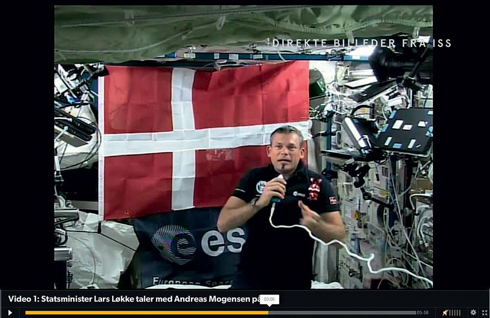
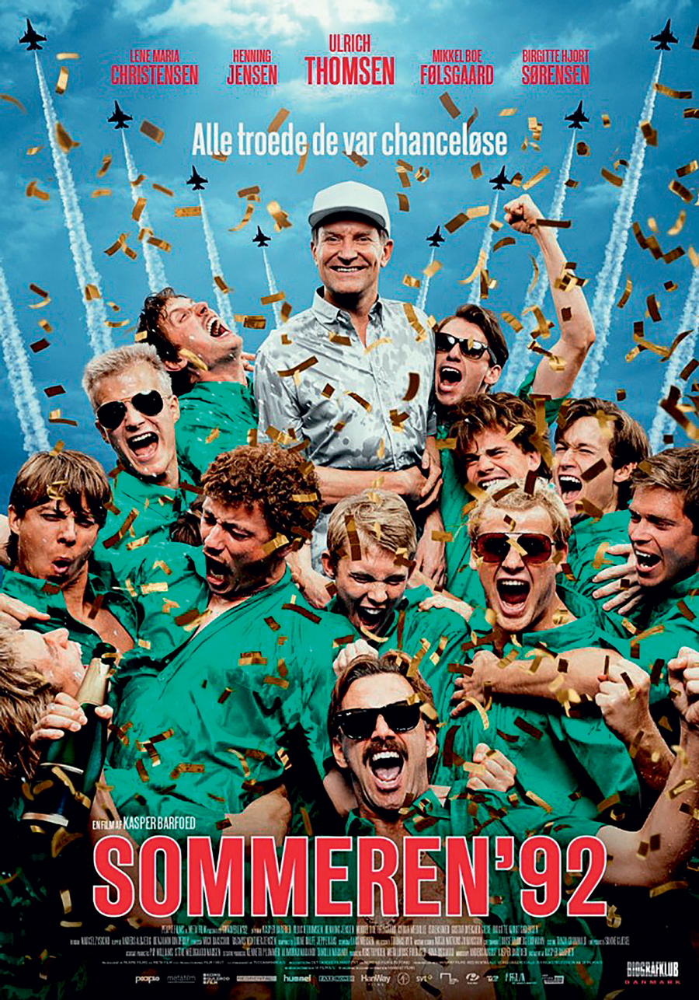

Dansk A
Digital eksamensopgave med adgang til internettet
kl. 09.00-14.00
Dansk
Mit, dit og vores Danmark
“Forestillinger om Danmark skabes i litteratur, musik, malerier, læsebøger, wikier, hjemmesider, skuespil og meget mere. Men de er ikke bare billeder til pynt eller noget, vi kan trække frem ved særlige lejligheder. Vi skal altid forestille os Danmark, før det kan eksistere. Alt, hvad vi siger, tænker, føler, ser, hører, mærker og lugter, er et resultat af denne fælles forestilling. Uden den ville vi ikke have arkæologi, geografi, vejrudsigt, folkekirke, nationalmuseum, folkeskole, kunst, kultur eller penge - kroner. Danmark findes ikke som et objekt i virkeligheden. Danmark er ikke derude i Danmark eller i verden. Danmark er et bevidsthedsfænomen eller, hvis man hellere vil bruge et andet billede, et sprogligt frembragt fænomen. Det findes inde i hovederne på danskerne. Og der er mange forskellige forestillinger: Danmark er en landsby. Danskerne er en stamme. Danmark er en brugsforening. Danmark er et lejrbål, hvor vi sidder i rundkreds og vender ryggen til de andre.”
| Hans Hauge, Danmark, 2013 |
Dette opgavesæt indeholder tekster, der på forskellig vis omhandler forestillinger om Danmark, det danske og nationale fællesskaber.
Du skal besvare én af opgaverne 1-4.
Du har 5 timer til at besvare opgaven.
Tilladte hjælpemidler: Alle hjælpemidler, herunder elektroniske.
Bemærk: Materiale hentet fra internettet vurderes i bedømmelsen kun positivt, hvis det bidrager til en kvalitativ forbedring af din besvarelse. Dvs. materialet vurderes i forhold til relevans, målrettethed, tekstpræsentation og evnen til at forholde sig kildekritisk til det fundne materiale.
Overordnede bedømmelseskriterier:
Din besvarelse vil blive bedømt ud fra en helhedsbetragtning. Det er således både form og indhold, der indgår i vurderingen. Ved helhedsbedømmelse er der tale om et samspil, hvori der indgår en række indholdsmæssige og formidlingsmæssige delaspekter:
|
- emnedækning - disponering - brug af tekstmateriale - selvstændighed - abstraktionsniveau - sproglig og grammatisk kompetence |
I opgaveformuleringerne bruges det udvidede tekstbegreb. Dvs. at ordet ”tekst” også henviser til billedmateriale og filmklip.
Det materiale, som skal bruges til at besvare opgaverne, findes dels i teksthæftet og dels på cd-rommen. På cd-rommen findes teksterne så vidt muligt i deres originale layout. Eventuelle meningsforstyrrende fejl i det originale layout på cd-rommen er rettet i papirudgaven.
Side 1: ”Den første dansker i rummet”, DR, stillbillede fra video, 5. september 2015
Side 23: Sommeren ’92, filmplakat, 2015
Side 1
|  ”Den første dansker i rummet”, DR, stillbillede fra video, 5. september 2015 |
Side 23
|  Sommeren ’92, filmplakat, 2015 |
Tekster til emnet
Tekst 1
Hans Hauge: ”Danske billeder” (uddrag)
Danmark, essay, 2013
Tekst 2
Tor Hernes: ”Illusionen om den tabte fortid”
Politiken, kronik, 13. september 2015
Tekst 3
Sebastian Abrahamsen: ”Fire minutter i fællesskab”
Golden Days Festivalmagasin, feature, september 2015
Tekst 4
Erling Jepsen: Den sønderjyske farm (uddrag)
Roman, 2013
Tekst 5
Lars Henrik Aagaard: ”Dansk reklamesøjle højt til vejrs”
Berlingske, artikel, 19. august 2015
Tekst 6
Peter A. G. Nielsen: Danmark
Sangtekst, 1986
Tekst 7
Adam Oehlenschläger: Fædrelands-Sang
Digt, 1819
Tekst 8
Hausgaard & Vers – rejsende i dansk, afsnit 2 (uddrag)
DRK, dokumentar, 17. september 2015
Tekst 9
Chin Ono: Rigtig dansker
Musikvideo, 2015
Tekst 10
Shaka Loveless: Danmark (coverversion)
DR2, Vi ses hos Clement, 13. september 2015
Opgaver til emnet
| 1. |
Redegør for og diskutér hovedsynspunkter i ”Illusionen om den tabte fortid” (tekst 2). I diskussionen skal du inddrage ”Fire minutter i fællesskab” (tekst 3) samt mindst en tekst, der skal være fra enten opgavesættet eller fra internettet.
Overskrift: Illusionen om den tabte fortid Bedømmelse: Din besvarelse vil blive bedømt ud fra din evne til at udvælge og præsentere de væsentlige pointer og begreber i tekst 2. Du vil også blive vurderet ud fra din evne til at inddrage tekst 3 samt den eller de selvvalgte tekster i din diskussion, din evne til at argumentere sammenhængende for dine iagttagelser og synspunkter samt ud fra din evne til at udvælge og anvende relevant selvvalgt materiale |
||||
| 2. |
Analysér og fortolk Den sønderjyske farm (tekst 4) med særligt fokus på jegfortællerens forhold til sit barndomsmiljø. Perspektivér herefter til opgavesættets overordnede emne. I perspektiveringen skal du inddrage mindst én tekst, du selv finder på internettet eller i opgavesættet.
Overskrift: Farmen ved Gramby Bakke Bedømmelse: Din besvarelse vil blive bedømt ud fra din evne til at fastholde et analytisk fokus og ud fra din evne til at fremdrage og dokumentere væsentlige aspekter i din analyse og fortolkning af tekst 4. Din evne til at perspektivere teksten og til at bruge de selvvalgte tekster vil også indgå i bedømmelsen |
||||
| 3. |
Denne opgave er todelt.
Bedømmelse: Vedr. A: Denne del udgør den primære del af din besvarelse. Din besvarelse vil blive bedømt ud fra din evne til at skrive en sammenhængende og velargumenteret kronik og ud fra din evne til at målrette din kroniks indhold og form til målgruppen og til det valgte medie. Du vil også blive bedømt ud fra din evne til at vinkle kronikken på en engageret og reflekteret måde samt ud fra din evne til at udvælge og aktivt inddrage relevante tekster fra opgavesættet og evt. fra internettet. Vedr. B: Din besvarelse vil blive bedømt ud fra din evne til at reflektere over og begrunde dine valg ved brug af danskfaglige begreber. | ||||
| 4. |
Analysér og fortolk Danmark (tekst 6). Perspektivér dernæst til opgavesættets overordnede emne. I perspektiveringen skal du inddrage Fædrelands-Sang (tekst 7).
Overskrift: Danmark Bedømmelse: Din besvarelse vil blive bedømt ud fra din evne til at fastholde et analytisk fokus og ud fra din evne til at fremdrage og dokumentere væsentlige aspekter i din analyse og fortolkning af tekst 6. Din perspektivering vil blive bedømt ud fra din evne til at sætte din analyse og fortolkning i relation til tekst 7 samt opgavesættets overordnede emne. |
Tekst 3
Sebastian Abrahamsen: ”Fire minutter i fællesskab”
Golden Days Festivalmagasin, feature, september 2015
Tekst 5
Lars Henrik Aagaard: ”Dansk reklamesøjle højt til vejrs”
Berlingske, artikel, 19. august 2015